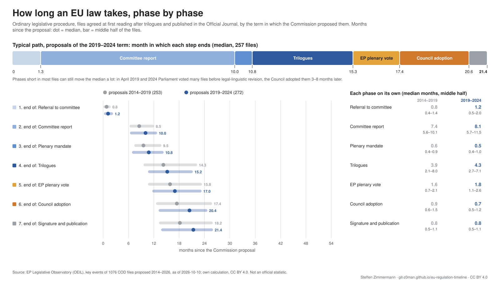
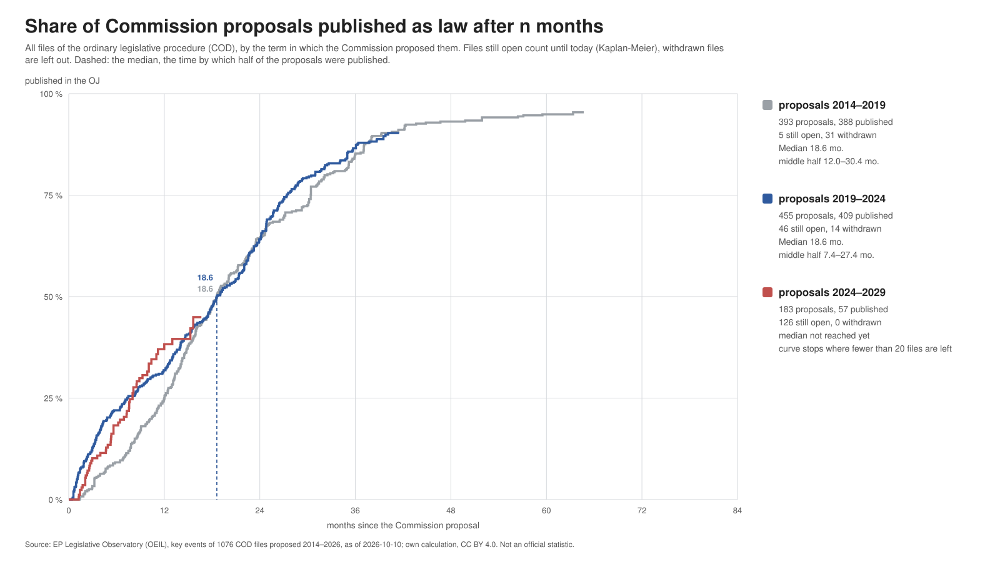

When will it be law? For each of the 12 open procedures we follow and the announced European Product Act, the likely date of publication in the Official Journal: from how long comparable EU laws took, from the step each file has reached, and from the calendar ahead, with six Council Presidencies and the European elections of 2029.
| Act | Where it stands | Official Journal, median | Half of the runs | Eight in ten | Before the 2029 elections |
|---|---|---|---|---|---|
| Omnibus IV – Digitalisation and common specifications (Directive) | provisionally agreed since 14 Jul 2026 | Dec 2026 | Dec 2026 – Jan 2027 | Dec 2026 – Feb 2027 | 100 % |
| Omnibus IV – Digitalisation and common specifications (Regulation) | provisionally agreed since 14 Jul 2026 | Dec 2026 | Dec 2026 – Jan 2027 | Dec 2026 – Feb 2027 | 100 % |
| MDR/IVDR simplification | referred to committee since 25 Mar 2026 | Feb 2028 | Sep 2027 – Sep 2028 | May 2027 – Mar 2030 | 86 % |
| Industrial Accelerator Act | referred to committee since 30 Apr 2026 | Feb 2028 | Sep 2027 – Oct 2028 | May 2027 – Mar 2030 | 86 % |
| Cybersecurity Act 2 | referred to committee since 25 Mar 2026 | Feb 2028 | Sep 2027 – Sep 2028 | May 2027 – Feb 2030 | 86 % |
| NIS-2 amendment | referred to committee since 25 Mar 2026 | Feb 2028 | Sep 2027 – Sep 2028 | May 2027 – Feb 2030 | 86 % |
| Digital Omnibus | referred to committee since 19 Jan 2026 | Feb 2028 | Oct 2027 – Sep 2028 | Jun 2027 – Sep 2030 | 83 % |
| EU Space Act | referred to committee since 8 Sep 2025 | Mar 2028 | Nov 2027 – Feb 2029 | Aug 2027 – Nov 2030 | 77 % |
| Chips Act 2.0 | referred to committee since 14 Sep 2026 | May 2028 | Oct 2027 – Jan 2029 | Jun 2027 – Apr 2030 | 83 % |
| Cloud and AI Development Act | referred to committee since 17 Sep 2026 | May 2028 | Oct 2027 – Jan 2029 | Jun 2027 – Apr 2030 | 83 % |
| New Standardisation Regulation | proposal since 6 Oct 2026 | Jul 2028 | Dec 2027 – Mar 2029 | Jul 2027 – Aug 2030 | 78 % |
| Public Procurement Act | proposal since 9 Sep 2026 | Aug 2028 | Jan 2028 – Feb 2029 | Aug 2027 – Sep 2030 | 80 % |
| European Product Act | proposal assumed Dec 2026 | Sep 2028 | Feb 2028 – Nov 2029 | Sep 2027 – Oct 2030 | 70 % |
Months from the Commission proposal to the Official Journal, for the 18 adopted acts we follow (EP Legislative Observatory). Of all 729 files with trilogues since 2012, 22 % were published within 14 months; of the acts we follow, 2, both targeted amendments (Digital Omnibus on AI, Reg. 2022/2480).
| Act | Proposal | Official Journal | Months | Crossed the election break |
|---|---|---|---|---|
| Digital Omnibus on AI | Nov 2025 | Jul 2026 | 8 | |
| Reg. 2022/2480 | Feb 2022 | Dec 2022 | 10 | |
| Net Zero Industry Act | Mar 2023 | Jun 2024 | 16 | yes |
| Market Surveillance Regulation | Dec 2017 | Jun 2019 | 18 | yes |
| Cybersecurity Act | Sep 2017 | Jun 2019 | 21 | yes |
| CSA amendment 2025/37 | Apr 2023 | Jan 2025 | 21 | yes |
| Cyber Solidarity Act | Apr 2023 | Jan 2025 | 21 | yes |
| General Product Safety Regulation | Jun 2021 | May 2023 | 23 | |
| NIS 2 Directive | Dec 2020 | Dec 2022 | 24 | |
| Internal Market Emergency and Resilience Act | Sep 2022 | Nov 2024 | 26 | yes |
| IMERA omnibus | Sep 2022 | Nov 2024 | 26 | yes |
| Product Liability Directive | Sep 2022 | Nov 2024 | 26 | yes |
| Cyber Resilience Act | Sep 2022 | Nov 2024 | 26 | yes |
| Machinery Regulation | Apr 2021 | Jun 2023 | 26 | |
| Ecodesign for Sustainable Products Regulation | Mar 2022 | Jun 2024 | 27 | yes |
| Toy Safety Regulation | Jul 2023 | Dec 2025 | 28 | yes |
| European Health Data Space Regulation | May 2022 | Mar 2025 | 34 | yes |
| AI Act | Apr 2021 | Jul 2024 | 39 | yes |
The European Product Act has not been proposed yet. Two structures are possible; the forecast covers both.
Forecast for the European Product Act · Product laws under the New Legislative Framework: which files change them in parallel
The history behind the forecast: every file of the ordinary legislative procedure since 2012 in the European Parliament's Legislative Observatory.
Files agreed at first reading after trilogues, by the term in which the Commission proposed them: the typical path and each phase on its own (median and middle half).

Download: PNG · PDF · German (PNG)
All files of the ordinary legislative procedure by term of the proposal; files still open count until today (Kaplan-Meier).

Download: PNG · PDF · German (PNG)
Comparable laws. The European Parliament's Legislative Observatory lists the key events of every file of the ordinary legislative procedure. We take all 906 files proposed since 2012 that were negotiated in trilogues (files withdrawn or adopted without negotiations are left out) and measure how long each step took: committee vote, start of trilogues, provisional agreement, Parliament's vote, Council adoption, Official Journal.
From where a file stands. For each open file we take the comparable files that reached the same step and had not moved on after as long as this file has waited. Files that are still open are continued with a published file that took at least as long. 4,000 runs per file give the median, the middle half and the range of eight in ten.
Calendar. Parliament does no legislative work between its last session before the European elections and the autumn, when its new committees vote again. We take these breaks of 2014, 2019 and 2024 out of the measured durations and put the break of 2029 into the forecast: a step that would fall into it moves to its end. The 2029 election dates are not set yet; we assume the calendar of 2024. Council Presidencies: Council Decision (EU) 2016/1316.
Track record. We forecast every file proposed in 2016-2021 (421 files) from the day of its proposal, with only what was known on that day. The real publication date fell in the middle half of the forecast for 52 % of the files (expected: 50 %) and in the eight-in-ten range for 75 % (expected: 80 %); the median missed by 8.4 months for the typical file.
What it does not know. Political priority, the size of a file, a deal between the institutions or a new crisis. Urgent files can be much faster, very large ones slower. Sources: EP Legislative Observatory, the procedure registers on our procedure pages, Council Decision (EU) 2016/1316.
Our own assessment from public sources, CC BY 4.0. Data of 10 October 2026. It describes how long comparable laws took; it does not say what the institutions will decide.